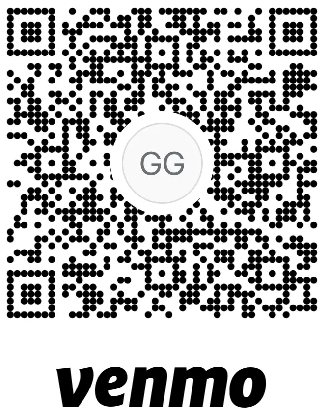

Tax-deductible · 100% community-funded
Support the Music
No corporate backing — GoLive runs on donations, volunteers, and the love of live music. Your gift keeps Saturday stages open for Bay Area musicians.
Donate via Benevity
If your company supports Benevity, you can donate directly through your corporate giving portal — often with an employer match. Simply log in to your company’s Benevity page and search for:
- ①Log in to your company’s Benevity giving page.
- ②Search for GoLive Musician’s League and choose an amount.
- ③Request your employer match, if your company offers one.
Donate via Venmo
You can also support us directly through Venmo. Scan the QR code below or tap the link.

Where your gift goes
Every dollar supports grassroots music culture in Silicon Valley.
Weekly stages
Keeping Weekend Jam’s Saturday-night sessions running across the Bay Area.
Original music
Platforms for independent artists to share and promote their own work.
Emerging bands
More performance and collaboration opportunities for grassroots bands.